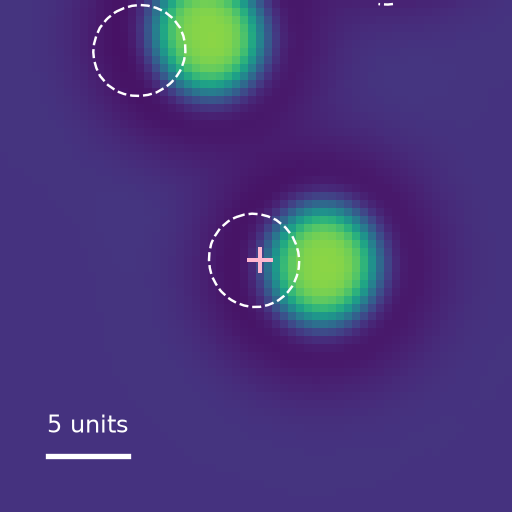
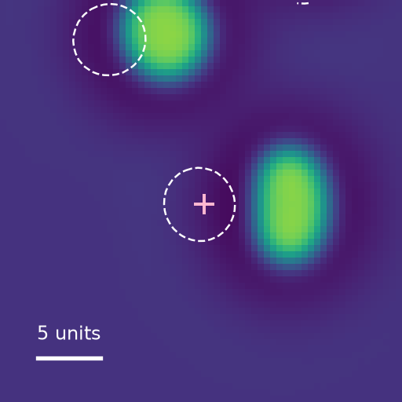
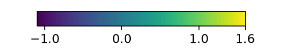
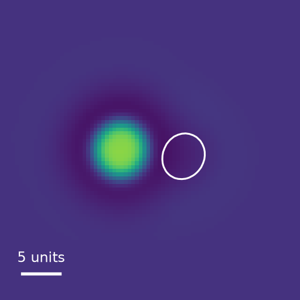
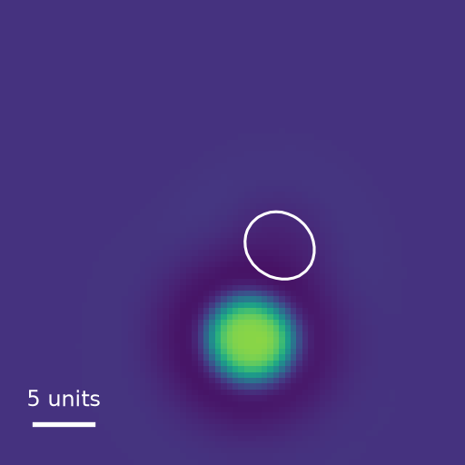
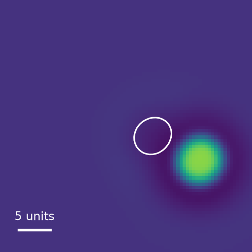

Worlds
Worlds made of interacting fields
Physim worlds are spatial fields whose local interactions produce persistent structures, motion, and collective behavior.
The simulation evolves a value at every point for each field. A localized structure—a “blob”—is a pattern in these values. The equations determine whether it persists, travels, binds to another structure, or disappears. Changing the equations creates different worlds; changing the initial fields explores different situations within a world.
1. Fields and governing dynamics
Each world contains activator fields ui and feedback fields xc, called channels. Activators have a cubic local reaction law. Channels respond to the activators, spread through diffusion, and feed back into the activator dynamics. Different diffusion coefficients and relaxation times let a local disturbance influence its surroundings and persist after its source has changed.
A genome specifies the number of fields, their coefficients, and their coupling matrices. In the absence of external forcing and noise, the supported equations are:
Here D controls diffusion, λ and k set the activator reaction, and τ is a channel's relaxation time. The matrix W drives channels from activators; K feeds channels back into activators. Their signs and magnitudes determine how the fields influence one another. A channel can receive input from several activators and affect several others.
The genome also designates a uniform background u0 satisfying the activator's cubic equation. Channels describe deviations from that background, so their background value is zero. The drive is either linear, gc(z) = z, or thresholded and bounded, with threshold θc and positive scale sc:
The optional term Bi is a sum of products βxcxd, allowing one channel to modulate another's feedback. These products vanish to first order around the uniform background. A linear stability check therefore cannot establish all of the behavior they produce. Field values can be signed; they are not all conserved concentrations.
Numerical realization
The simulator uses a two-dimensional periodic domain: fields leaving one edge continue at the opposite edge. Each CPU step computes all reaction terms from the existing fields and advances them with explicit Euler. It then adds independent Gaussian increments to the activators and applies diffusion in Fourier space, multiplying each mode with wavevector q by exp(−D|q|²Δt). This integrates the diffusion substep exactly; the combined time-stepping method remains an approximation.
The three world instances illustrated below—p4g2_044, BF, and XV—share a reference numerical profile that uses a 128 × 128 domain, a 256 × 256 grid (spacing 0.5), timestep 0.02, and float32 fields. Activator noise adds 0.002√Δt times an independent standard normal value at each grid point and step. That convention, including its grid dependence, is part of the numerical specification.
Reproducing a world thus requires its genome, simulator version, and numerical settings. Blobkit also provides optional JAX backends for batched CPU/GPU simulation; agreement between backends must be checked for the stated settings and workload.
2. From fields to moving structures
A simple starting point is one activator with two inhibitory channels. Local activation and saturation can maintain a spot, while feedback controls its extent and the surrounding field profile. The channels' different spatial ranges and response times can support stationary spots, drifting spots, or interacting pairs. These are parameter-dependent solutions of the field equations.
This construction draws on work on interacting pulses in three-component reaction–diffusion systems by Schenk, Or-Guil, Bode and Purwins (1997). The wider physical background is reviewed by Purwins, Bödeker and Amiranashvili (2010). The multi-field genomes below are distinct model instances built within this broader family.


A moving spot continually changes the fields around it. Slowly relaxing channels can retain a trace of where it has been, while overlapping profiles let one structure affect another. Coupled activators can form composite structures whose internal arrangement evolves as they move. Extended stripes and defects are also possible; a world need not consist of isolated spots.
3. Examples from the collection
The collection includes both small constructions and larger systems found by search. The following examples illustrate different mechanisms. The observations refer to particular simulated starting states; the same genome can behave differently under another initialization.
Patterns and defects: p4g2_044
This genome has four activators and eight channels, with no bilinear terms. Localized peaks coexist with extended stripes and negative defects on positive backgrounds. A source can perturb these patterns, and the observed response depends on source strength and spatial location. A description based only on the positions of bright spots would omit much of the evolving field structure.
p4g2_044, shown separately, and the historical structure-count diagnostic. This research continuation illustrates the world; its timestamps and count are not an evaluation score.Exact field equations · p4g2_044
Coefficients are shown at their full stored precision. Indices start at zero, as in the genome. These are the deterministic field equations; the numerical profile specifies discretization and noise, and experiments may add source forcing.
Deviations from the uniform background
Thresholded channel drive
Activator fields
Feedback channels
Persistent feedback: BF
BF (short for “b-field”) contains one activator and three channels. A trail channel has zero diffusion and a relaxation time of 200 time units, so it retains local history. Bilinear feedback lets that history affect subsequent activator motion.
No pulse · t = 50

Trail pulse · t = 50


Exact field equations · BF
Coefficients are shown at their full stored precision. Indices start at zero, as in the genome. These are the deterministic field equations; the numerical profile specifies discretization and noise, and experiments may add source forcing.
Deviations from the uniform background
Thresholded channel drive
Activator fields
Feedback channels
Orbital binding: XV
XV (short for “cross-v”) contains two activators and four channels. In the selected starting state, one localized activator structure travels around a much less mobile partner. Pulses into either activator change subsequent behavior, providing a way to investigate their interaction.
t = 0

t = 125

t = 250

Exact field equations · XV
Coefficients are shown at their full stored precision. Indices start at zero, as in the genome. These are the deterministic field equations; the numerical profile specifies discretization and noise, and experiments may add source forcing.
Deviations from the uniform background
Activator fields
Feedback channels
The BF and XV investigation contains the field images, intervention measurements, and mechanism controls. The landing-page film shows another preserved world, ds3_014, combining its fields in one view.
4. Generating and selecting worlds
Blobkit provides the reusable machinery for simulation, evolutionary search, measurement, and harvesting. A Python recipe defines which candidate systems to try, how to measure them, how to select parents, and which results to preserve. Users can supply their own metrics and search policies directly in code.
Search can vary coefficients, add or remove channels, combine systems, and introduce couplings. Numerical checks filter unsupported or unstable candidates, followed by simulations that measure persistence, spatial organization, motion, feedback, or other chosen properties. Selection can favor high scores or retain a diverse range of measured behaviors.
The recipe's fitness is a criterion for selecting worlds. A high value does not establish a mechanism or guarantee interesting behavior across initial conditions. Harvested candidates need fresh continuations and controlled interventions to establish what they do, how reliably they do it, and which terms are responsible.
The registry preserves worlds together with the available recipe code, initial genomes, seeds, parentage, metrics, checkpoints, and implementation versions. A recipe can generate many runs, and a run can yield many worlds.
The next chapter takes a world with observed behavior and defines a repeatable laboratory: a starting state, instruments, interventions, and a prediction interface.